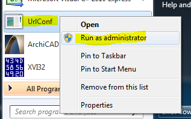
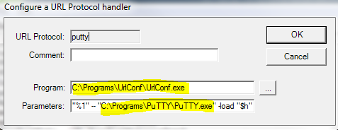
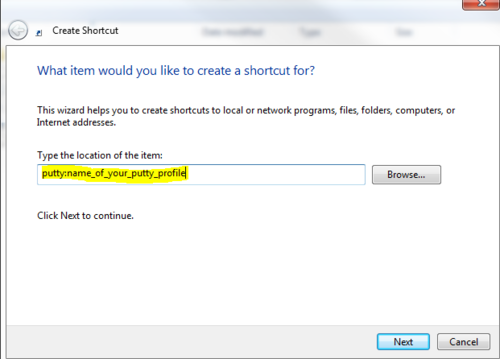

putty:[profile] URL handler
Why: To share clickable shortcuts to PuTTY profiles in version control. Shortcuts to .exes cannot be shared because PuTTY install paths on all machines might not be the same.
Instructions
-
Download URLConf from http://urlconf.codeplex.com/ (use the .msi installer)
-
Run it as an administrator:

-
Go to “Edit -> New”
-
Enter details as such:

Program:
C:\Programs\UrlConf\UrlConf.exe
Parameters:
"%1" – "C:\Programs\PuTTY\PuTTY.exe" -load "$h"
Obviously, replace paths to UrlConf.exe and PuTTY.exe with your corresponding paths.
- Now create a shortcut somewhere and type putty:<name_of_your_putty_profile> as the URL.


Thanks for reading! 😍
If you like my writing, consider following me on Twitter.
Stay updated on my blog posts & projects - sign up for
my newsletter. 🚀
No spam, unsubscribe any time.
RSS also available.